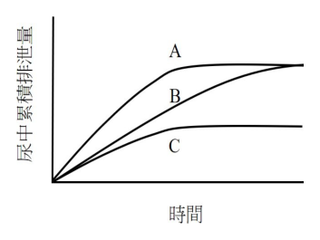
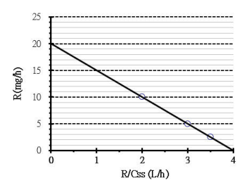

開卷有益 ／
藥師 ／ 藥劑學與生物藥劑學 ／ 113 年第 1 次113 年第 1 次藥師藥劑學與生物藥劑學試題與答案
這一頁是民國 113 年第 1 次藥師藥劑學與生物藥劑學的整份歷屆試題，共 80 題，題目與標準答案出自考選部「國家考試試題及測驗式試題答案」開放資料，其中 69 題附有詳解。以下逐題列出題幹、選項與答案；要計時作答或記錄成績，請用線上練習。
考選部原始場次代碼：113020
線上作答這一科 →
全部 80 題
第 1 題
甘油之密度為1.25 g/mL，量取1 kg之甘油，其體積為若干？
（A） 80 cL（B） 80 dL（C） 125 dL（D） 125 cL答案：（A）
詳解與考點 正解：本題已知質量與密度，應用密度式 ρ = m/V 反求體積。先換算質量：1 kg = 1,000 g；再代入 V = m/ρ = 1,000 g / 1.25 g/mL = 800 mL。又 1 cL = 10 mL，所以 800 mL = 80 cL，故選 A。
B：80 dL = 8,000 mL，為計算所得 800 mL 的 10 倍，將 cL 與 dL 的換算混淆，故非答案。
C：125 dL = 12,500 mL，與 1 kg 甘油依密度換得的 800 mL 不符，故非答案。
D：125 cL = 1,250 mL，仍大於正確體積 800 mL，故非答案。
本題考點：密度與體積（density-volume relationship）——已知質量與密度時，用 V = m/ρ，並先把質量與密度單位統一；容量單位換算（volume-unit conversion）——1 dL = 100 mL、1 cL = 10 mL，代入答案前要逐一核對前綴倍率。
第 2 題
依中華藥典，下列敘述何者錯誤？
（A） 凡僅稱水而未表明種類者，均指純淨水（B） 藥典所規定之溫度，均以攝氏為準，除另有規定外，均以溫度25°為標準，常溫為15～30°，微溫為30～40°（C） 藥品之溶解度除另有規定外，係指於25℃時溶質1 g或1 mL能溶於若干mL溶劑中（D） 貯藏溫度所稱「涼處」，係指溫度為4～15℃，「冷處」係指溫度不超過4℃，貯藏溫度如無特別規定係指 常溫答案：（D）
詳解與考點 正解：本題考的是中華藥典對貯藏溫度術語的界定；（D）把涼處與冷處的界線都下移至 4°C，不符合題目所用定義。涼處應為 8～15°C，冷處為不超過 8°C，故選 D。
A：藥典中僅稱水而未指明種類時，係指純淨水，敘述正確，故非答案。
B：藥典溫度以攝氏為準，除另有規定外以 25°C 為標準，常溫與微溫的範圍亦如題述，故非答案。
C：溶解度在未另作規定時，以 25°C 下 1 g 或 1 mL 溶質所需溶劑體積表示，敘述正確，故非答案。
本題考點：藥典溫度術語（pharmacopoeial storage temperature terms）——遇到涼處與冷處時，要以 8°C 為分界判讀，不能任意改成 4°C；藥典溶解度（pharmacopoeial solubility）——未另規定時，以標準溫度下單位量溶質所需溶劑量表述。
第 3 題
「Phenobarbital elixir」配方中，添加 glycerin 之主要目的為何？
（A） 增進 phenobarbital 之溶解度（B） 作為保濕劑以減少水分蒸發（C） 提供防腐效果避免微生物孳生（D） 作為甜味劑以增進口感答案：（A）
詳解與考點 正解：Phenobarbital 在水中的溶解度有限，配方中 glycerin 的主要功能是作為 cosolvent，提高藥物在液體製劑中的溶解度並維持均一液相；（A）正確，故選 A。
B：glycerin 具有吸濕性，在半固體製劑可作為保濕劑；但本題的 elixir 中其主要目的不是減少水分蒸發，故非答案。
C：glycerin 在高濃度下可影響水活性，但不能因此把它當作本配方的主要防腐設計；主要判準仍是其對 phenobarbital 溶解度的貢獻，故非答案。
D：glycerin 帶甜味，卻不是此處加入它的主要目的；甜味效果不能取代 cosolvent 的功能，故非答案。
本題考點：共溶劑（cosolvent）——藥物在水中溶解度不足而處方加入可混溶有機液體時，優先判斷其增溶作用；Phenobarbital elixir——液體處方中同一賦形劑可能兼具甜味或保濕性，但應以配方欲解決的主問題判定主要用途。
第 4 題 待校
依據中華藥典之規定，下列醑劑何者是以蒸餾法製備？
（A） 複方橙皮醑（compound orange spirit）（B） 芳香氨醑（aromatic ammonia spirit）（C） 薄荷醑（peppermint spirit）（D） 芳香醑（aromatic spirit）答案：（D）
第 5 題
Isopropyl rubbing alcohol於一般非特定對象使用最適當之濃度為何？
（A） 60%（B） 70%（C） 80%（D） 91%答案：（B）
詳解與考點 正解：Isopropyl rubbing alcohol 的適當濃度要兼顧蛋白質變性所需的水分與接觸時間。70% 溶液可避免過快揮發，水分也有助於變性作用；（B）最適當，故選 B。
A：60% 的 alcohol 濃度較低，雖含有較多水分，但有效 alcohol 含量不足以成為一般使用的最佳濃度，故非答案。
C、D：80% 與 91% 的 alcohol 濃度較高，卻較容易快速揮發，且水分比例較低。看似濃度更高，實際上不利於維持足夠接觸時間與變性條件，故均非答案。
本題考點：alcohol antisepsis——判斷 alcohol 消毒濃度時，不能只看百分比高低，須同時看水分對蛋白質變性與揮發速度的影響；isopropyl rubbing alcohol——一般皮膚表面使用時，以 70% 作為濃度配對。
第 6 題
非離子型界面活性劑溶液加熱到霧點（cloud point）時為甲狀態，再冷卻至霧點以下溫度時為乙狀態，下列 何者正確？
（A） 甲為混濁；乙為混濁（B） 甲為混濁；乙為澄清（C） 甲為澄清；乙為混濁（D） 甲為澄清；乙為澄清答案：（B）
詳解與考點 正解：非離子型界面活性劑加熱至 cloud point 時，polyoxyethylene 鏈段脫水使膠束聚集，溶液由澄清轉為混濁；冷卻到 cloud point 以下後，水合恢復而回到澄清狀態。因此甲為混濁、乙為澄清；（B）正確，故選 B。
A：甲在 cloud point 時為混濁的判斷正確，但乙冷卻至 cloud point 以下應恢復澄清，不會持續混濁，故非答案。
C：此項把加熱與冷卻後的外觀完全顛倒；cloud point 本身就是開始出現混濁的溫度，故非答案。
D：乙為澄清的部分正確，但甲在 cloud point 時不會維持澄清，故非答案。
本題考點：霧點（cloud point）——非離子型界面活性劑加熱至霧點時判為混濁，冷卻回霧點以下則判為澄清；polyoxyethylene hydration——利用聚氧乙烯鏈段的水合與脫水變化，判斷溫度造成的相分離是否可逆。
第 7 題
依中華藥典，有關氣化噴霧劑之敘述，下列何者最適當？
（A） 活門之主要功能係指示噴霧方向，保護手免於推動劑之冰凍作用（B） 專指經由自動加壓裝置噴出霧狀泡沫、半固體及流體之產品（C） 可使用著衣之金屬容器，增進抗腐蝕力，強化處方安定性（D） 使用之容器不可含有玻璃，因其無法耐壓，亦不可抗衝擊答案：（C）
詳解與考點 正解：氣化噴霧劑的容器須兼顧推動劑、製劑與金屬內壁的相容性。著衣的金屬容器可降低腐蝕並幫助維持處方安定性；（C）最適當，故選 C。
A：（A）把 actuator 的導引噴霧方向與保護手部等功能歸給活門。活門的核心作用是控制內容物釋放與密封，兩者的構造功能不能互換，故非答案。
B：（B）將氣化噴霧劑限縮為經自動加壓裝置噴出泡沫、半固體及流體的產品，未以容器內壓與活門釋放這一核心特徵表述，範圍不精確，故非答案。
D：（D）以絕對語氣排除玻璃容器不正確；是否能使用玻璃取決於其耐壓與耐衝擊設計，不能一概認定不可使用，故非答案。
本題考點：氣化噴霧劑（aerosols）——判斷製劑構造時，先區分活門的釋放與密封功能、actuator 的噴霧導向功能；容器相容性（container compatibility）——處方可能腐蝕金屬時，應考慮內壁著衣以保護容器與製劑安定性。
第 8 題
下列何者不是懸液劑在劑型設計及使用之主要考量？
（A） 分散媒液（dispersion medium）儘可能避免使用純水，以避免細菌孳生（B） 分散相（dispersed phase）顆粒沉降緩慢，在振搖後易於再分散（C） 製劑易於從裝填容器中倒出（D） 顆粒粒徑大小維持均一，即使在長時間保存也不改變答案：（A）
詳解與考點 正解：懸液劑的設計重點是物理安定、可再分散與可正確倒取，而不是一律禁止使用純水。純水可以作為分散媒液；微生物風險應以適當防腐策略、製備品質與使用期限處理，所以（A）不是主要考量，故選 A。
B：顆粒沉降緩慢且振搖後易再分散，可減少硬結並使每次取用的劑量較均一，是懸液劑的重要設計目標，故非答案。
C：製劑必須能自容器順利倒出，表示黏度不能高到妨礙取用，屬使用上的主要考量，故非答案。
D：長期保存仍維持粒徑均一，可避免聚集或粒徑成長造成沉降與再分散性惡化，屬主要考量，故非答案。
本題考點：懸液劑安定性（suspension stability）——判斷品質時，同時看沉降速率、再分散性與粒徑是否隨保存改變；分散媒液（dispersion medium）——媒液選擇要依藥物與製劑相容性決定，微生物控制不能簡化成一律不用純水。
第 9 題
於10 mL的紅色金膠溶體中，加入0.01 mg gelatin，即可防止其因添加1 mL 10% NaCl而變色之反應。據上述 的情況，gelatin的金數（gold number）為若干？
（A） 1（B） 0.1（C） 0.01（D） 0.001答案：（C）
詳解與考點 正解：金數（gold number）定義為防止 10 mL 金膠溶體在加入 1 mL 10% NaCl 後變色所需的最小保護膠體重量，以 mg 表示。題目已給 gelatin 為 0.01 mg，且剛好能防止變色，因此 gold number = 0.01，故選 C。
A：1 代表需 1 mg gelatin，為題示最小量 0.01 mg 的 100 倍；金數使用的是最小有效重量，故非答案。
B：0.1 代表 0.1 mg gelatin，為題示最小量的 10 倍，故非答案。
D：0.001 代表 0.001 mg gelatin，僅為題示最小量的十分之一，無法依題幹判定可防止變色，故非答案。
本題考點：金數（gold number）——在標準的 10 mL 金膠溶體與 1 mL 10% NaCl 條件下，直接讀取防止變色所需的最小保護膠體 mg 數；保護膠體（protective colloid）——數值越小表示所需保護膠體越少，保護能力越強。
第 10 題
已知Tween 20之臨界微膠濃度為0.0044（w/v），若界面活性劑濃度增加為原來的2倍，則下列何項性質會隨 之增加？
（A） 界面張力（B） 表面張力（C） 當量導電度（D） 難溶性藥品之溶解度答案：（D）
詳解與考點 正解：Tween 20 的臨界微膠濃度為 0.0044（w/v），濃度加倍後為 0.0044 × 2 = 0.0088（w/v），已高於臨界微膠濃度。額外加入的界面活性劑主要形成更多微膠，能提高難溶性藥品的 micellar solubilization；（D）因此增加，故選 D。
A：界面張力隨界面活性劑濃度上升會先下降，到達臨界微膠濃度附近後趨於平台，不會在本條件下隨之增加，故非答案。
B：表面張力的判讀與界面張力相同，達到臨界微膠濃度後不再因形成更多微膠而上升，故非答案。
C：Tween 20 為非離子型界面活性劑，當量導電度不是其濃度超過臨界微膠濃度後增加的特徵；分辨關鍵在微膠增多帶來的是增溶，而非離子導電效應，故非答案。
本題考點：臨界微膠濃度（critical micelle concentration）——先比較實際濃度是否超過 CMC，超過後新增界面活性劑優先形成微膠；微膠增溶（micellar solubilization）——難溶性藥物可分配進微膠核心，故微膠數量增加時其表觀溶解度上升。
第 11 題
下列何者為 polyoxyethylene sorbitan fatty acid esters？
（A） Span（B） Tween（C） PEG（D） Brij答案：（B）
詳解與考點 正解：polyoxyethylene sorbitan fatty acid esters 的命名同時包含 sorbitan、脂肪酸酯與 polyoxyethylene，對應的商品類別為 Tween；（B）正確，故選 B。
A：Span 為 sorbitan fatty acid esters，缺少 polyoxyethylene 鏈段；與 Tween 看似同有 sorbitan，差異正是在是否經聚氧乙烯化，故非答案。
C：PEG 是 polyethylene glycol 的通稱，不是 sorbitan fatty acid ester 類界面活性劑，故非答案。
D：Brij 為 polyoxyethylene fatty alcohol ethers，其親油端來自脂肪醇醚而非 sorbitan 脂肪酸酯，故非答案。
本題考點：Tween——名稱出現 polyoxyethylene sorbitan fatty acid ester 時，直接配對 Tween；Span 與 Tween 的區分（sorbitan surfactants）——先看是否有 polyoxyethylene 鏈段，沒有者為 Span，有者為 Tween。
第 12 題
Bentonite magma與下列何者調配時，會產生absorption現象？
（A） sodium bisulfate（B） sodium dodecyl sulfate（C） potassium chloride（D） sodium chloride答案：（B）
詳解與考點 正解：本題考 bentonite magma 與界面活性劑的相容性；（B）sodium dodecyl sulfate 可與 bentonite 膠體表面交互作用並產生題幹所稱的 absorption 現象，故選 B。
A、C、D：（A）sodium bisulfate、（C）potassium chloride 與（D）sodium chloride 均為簡單電解質，雖可能改變離子強度或影響膠體安定性，卻不是題幹所問由界面活性劑與 bentonite 表面交互作用造成的 absorption 現象，故均非答案。
本題考點：bentonite magma 相容性——遇到 bentonite 與添加物併用時，先辨識添加物是否為可與膠體表面交互作用的界面活性劑；吸附現象（adsorption）——界面活性劑與膠體表面的交互作用可改變製劑行為，不能只依添加物是否為電解質判斷。
第 13 題
下列何種方法最適合測量50 nm大小之顆粒？
（A） optical microscopy（B） electron microscopy（C） sedimentation（D） sieve analysis答案：（B）
詳解與考點 正解：50 nm 已低於 optical microscopy 的可分辨尺度，須使用電子束取得足夠解析度；（B）electron microscopy 最適合，故選 B。
A：optical microscopy 受可見光繞射限制，無法可靠分辨 50 nm 顆粒，故非答案。
C：sedimentation 可用於由沉降行為間接推估粒徑，但對 50 nm 顆粒易受布朗運動等因素影響，解析度與直接觀察能力均不如 electron microscopy，故非答案。
D：sieve analysis 適用較大顆粒的篩分，篩孔尺度遠大於 50 nm，故非答案。
本題考點：電子顯微鏡（electron microscopy）——顆粒進入數十 nm 尺度時，優先選擇可直接提供奈米級解析度的方法；粒徑分析方法選擇（particle-size analysis）——先依目標粒徑與方法解析度配對，篩分法與光學顯微鏡不適合奈米級顆粒。
第 14 題
25℃時水之密度1 g/mL，黏度0.895 cP，在毛細管黏度計流動之時間為15秒，若某液體流動之時間為750 秒，而其密度為1.216 g/mL，則該液體之黏度為若干cP？
（A） 1.74×10-2（B） 2.2×10-2（C） 36.8（D） 54.4答案：（D）
第 15 題
以可可脂為基劑製作成人用之栓劑，下列敘述何者正確？
（A） 肛門栓劑為卵形，約重 2 g（B） 陰道栓劑為子彈形，約重 5 g（C） 男用尿道栓劑直徑 3~6 mm，約重 1 g（D） 女用尿道栓劑長 50~70 mm，約重 2 g答案：（D）
詳解與考點 正解：尿道栓劑的規格依性別與尿道長度不同而異。女用尿道栓劑較短，長度為 50～70 mm，約重 2 g；（D）正確，故選 D。
A：成人肛門栓劑約重 2 g 的部分正確，但其常用外形為子彈形或魚雷形，不是卵形，故非答案。
B：陰道栓劑約重 5 g 的部分可成立，但常用外形為卵形或球形；（B）寫成子彈形是把肛門栓劑的外形混入，故非答案。
C：男用尿道栓劑通常較女用者長且重量較大；（C）所列約重 1 g 不符合其規格，故非答案。
本題考點：栓劑規格（suppository specifications）——先按給藥部位分辨肛門、陰道與尿道栓劑，再核對其外形與重量；尿道栓劑（urethral bougies）——比較男女用規格時，女性用較短且較輕，不能把不同部位的尺寸混用。
第 16 題
下列何者所製成之栓劑為局部性作用？
（A） bisacodyl（B） hydromorphone（C） indomethacin（D） promethazine HCl答案：（A）
詳解與考點 正解：栓劑是否屬局部性作用，要看藥物的主要治療目標是在給藥部位還是必須進入全身循環。（A）bisacodyl 置入直腸後主要刺激腸道蠕動以促進排便，屬直腸局部瀉劑作用，故選 A。
B：（B）hydromorphone 的止痛效果須經吸收後作用於中樞 opioid receptor，直腸給藥只是改變投藥途徑，治療目標仍是全身性鎮痛。
C：（C）indomethacin 的抗發炎與止痛效果仰賴全身性 cyclooxygenase 抑制；製成栓劑可供無法口服時使用，並不使其變成局部直腸用藥。
D：（D）promethazine HCl 為 antihistamine，可用於全身性抗過敏或止吐，其栓劑目的不是在直腸局部產生療效。
本題考點：局部與全身作用栓劑（local versus systemic suppositories）——先判斷治療目標是否位在直腸局部，不能只因給藥途徑是栓劑就視為局部作用；bisacodyl（stimulant laxative）——直腸製劑用於促進排便時，依其在腸道局部刺激蠕動的作用判為局部性。
第 17 題
肛門栓劑給藥與口服給藥之比較，下列何者錯誤？
（A） 肛門栓劑可完全避免首渡效應（first-pass effect）（B） 肛門栓劑給藥可避免藥物被體內酸性環境破壞（C） 口服給藥劑量選擇性較多且較易調整（D） 口服給藥對藥物吸收部位的表面積較大答案：（A）
詳解與考點 正解：肛門給藥的靜脈回流並非全部繞過肝門靜脈系統；直腸上段吸收的藥物仍可能經門靜脈進肝臟，因此（A）「可完全避免」首渡效應（first-pass effect）的說法過度絕對，是錯誤敘述，故選 A。
B：（B）肛門栓劑不會先經胃內酸性環境，可避免酸不穩定藥物在胃中受破壞，這正是相對於口服途徑的優點之一。
C：（C）口服製劑可選用錠劑、膠囊、液劑等多種劑型，也較容易依需要分割、調整或重新選擇劑量，敘述正確。
D：（D）口服藥物主要在小腸吸收，小腸具有較大的吸收表面積；相較之下，直腸可供吸收的面積較小，敘述正確。
本題考點：首渡效應（first-pass effect）——判斷直腸給藥時要看吸收部位的靜脈回流，能減少首渡效應不等於完全避免；肛門與口服給藥比較（rectal versus oral administration）——遇到酸不穩定或無法吞服的情境可考慮肛門途徑，但劑量調整與吸收面積通常仍以口服途徑較有彈性。
第 18 題
尿道栓劑又可稱為何？
（A） aurinaria（B） bougies（C） laudanum（D） pessaries答案：（B）
詳解與考點 正解：尿道栓劑的名稱依其細長、可置入尿道的劑型特徵判斷，標準名稱是 bougies，故選 B。
A：（A）aurinaria 不是尿道栓劑的標準劑型名稱，不能用來指稱置入尿道的栓劑。
C：（C）laudanum 是含鴉片成分的酊劑名稱，屬液體製劑概念，與尿道栓劑的劑型不同。
D：（D）pessaries 指陰道用栓劑；分辨關鍵在給藥腔道，陰道用 pessaries 不等於尿道用 bougies。
本題考點：尿道栓劑（bougies）——看到尿道給藥且劑型為細長固體時，對應 bougies；陰道栓劑（pessaries）——看到陰道局部給藥時才用 pessaries，應按解剖給藥部位區分栓劑名稱。
第 19 題
下列何者所製成之凝膠，通常屬於二相系統（two-phase system）？
（A） 海藻酸（B） 西黃蓍膠（C） 氫氧化鋁（D） 明膠答案：（C）
詳解與考點 正解：二相凝膠的特徵是有不溶性固體粒子分散在液體連續相中。（C）氫氧化鋁形成的凝膠含有分散的無機粒子與液相，通常歸為二相系統（two-phase system），故選 C。
A：（A）海藻酸形成凝膠時以高分子鏈在水中水合、交聯或纏結成網狀結構為主，通常按單相有機凝膠理解，不是本題所問的無機粒子分散二相系統。
B：（B）西黃蓍膠是天然多醣膠體，其增稠來自親水性高分子在水中的溶脹與網狀結構，分類重點不同於氫氧化鋁的二相分散系統。
D：（D）明膠為蛋白質高分子，冷卻後形成連續的水合網狀凝膠；看似同樣呈膠狀，但不是以不溶無機粒子作分散相。
本題考點：單相與二相凝膠（one-phase versus two-phase gels）——先看膠體是高分子水合網狀結構，還是不溶粒子分散於液相；無機凝膠（inorganic gels）——氫氧化鋁等無機粒子形成的凝膠，判斷時以分散相與連續相並存作為二相線索。
第 20 題
有關carbomer之敘述，下列何者正確？
（A） 將超過3%電解質加入carbomer凝膠劑可生成透明液狀物質（B） 將乙醇加入carbomer凝膠劑可提高黏稠度（C） 可利用改變酸鹼度調整carbomer凝膠劑黏稠度（D） 其為polyoxyethylene-polyoxypropylene共聚合物答案：（C）
詳解與考點 正解：carbomer 是具羧基的交聯 polyacrylic acid，高分子鏈的電離與伸展會隨酸鹼度改變；經適當中和後鏈段排斥增加、吸水膨潤，黏稠度即可調整。因此（C）可利用改變酸鹼度調整 carbomer 凝膠劑黏稠度，故選 C。
A：（A）較高濃度的電解質會屏蔽 carbomer 鏈上的電荷，通常使凝膠黏度下降或結構受破壞，不能據此判為生成透明液狀物質。
B：（B）乙醇可作為部分處方的共溶媒，但會改變高分子水合與溶媒環境，不能概括為加入後必然提高 carbomer 的黏稠度。
D：（D）polyoxyethylene-polyoxypropylene 共聚合物是 poloxamer 的結構描述；carbomer 的主體是交聯 polyacrylic acid，兩者的高分子骨架不同。
本題考點：carbomer 凝膠（carbomer gel）——遇到黏度調整問題時，先判斷羧基電離與中和造成的膨潤變化；電解質對聚電解質凝膠的影響（electrolyte effect on polyelectrolyte gels）——電荷被屏蔽時網狀結構容易收縮，不能把加鹽視為增稠方法；poloxamer（polyoxyethylene-polyoxypropylene copolymer）——看到此嵌段共聚合物時應與 carbomer 分開辨識。
第 21 題
依中華藥典，有關軟膏劑之敘述，下列何者錯誤？
（A） 為外用半固體製劑（B） 黃蠟為眼用軟膏最常用之基劑（C） 軟膏劑應置於密蓋容器內，於 30℃ 以下貯存（D） 眼用軟膏應置滅菌之緊密容器內，於15℃ 以下貯存答案：（B）
詳解與考點 正解：眼用軟膏除了基劑相容性，還須滿足無菌與眼部耐受性；黃蠟可用來調整軟膏硬度，卻不是最常用的眼用軟膏基劑。因此（B）把黃蠟說成最常用基劑是錯誤敘述，故選 B。
A：（A）軟膏劑為供皮膚或黏膜外用的半固體製劑，這是劑型的基本分類，敘述正確。
C：（C）一般軟膏劑應以密蓋容器保存並避免過高溫度；題幹所列於 30℃ 以下貯存符合其避免基劑軟化、分離或變質的保存原則。
D：（D）眼用軟膏須置於滅菌且緊密的容器，以降低微生物污染；相對於一般外用軟膏，無菌與較嚴格的貯存條件正是其差異。
本題考點：眼用軟膏（ophthalmic ointments）——判斷時先看無菌容器與眼部相容基劑，不能把調整硬度的蠟類直接當成主要基劑；軟膏貯存（ointment storage）——半固體製劑要避熱並密閉保存，眼用製劑還要加上無菌要求。
第 22 題
Bentonite作為軟膏基劑，其成分中含有下列何種金屬？
（A） 鋁（B） 鉛（C） 銀（D） 錫答案：（A）
詳解與考點 正解：Bentonite 的主要礦物組成屬水合鋁矽酸鹽，常以 montmorillonite 為主，因此其成分中的金屬是鋁，故選 A。
B：（B）鉛不是 Bentonite 的主要結構金屬；將鋁矽酸鹽誤認成含鉛礦物，會把礦物種類與金屬成分混淆。
C：（C）銀不構成 Bentonite 的層狀矽酸鹽骨架，與其作為吸附性或膨潤性黏土的組成無關。
D：（D）錫也不是 Bentonite 的特徵金屬成分；判別時應抓住其為鋁矽酸鹽黏土，而非任一金屬鹽類。
本題考點：Bentonite（bentonite）——看到此黏土礦物時，以水合鋁矽酸鹽辨識其成分；蒙脫石（montmorillonite）——判斷膨潤性黏土的無機組成時，先連結鋁矽酸鹽層狀結構而非重金屬。
第 23 題
依據中華藥典，對化學藥品粉末粗細度之規定，「細粉」之所有粉粒均應通過幾號標準試驗篩？
（A） 20（B） 40（C） 60（D） 80答案：（D）
詳解與考點 正解：粉末粗細度的判斷以全部粉粒能通過的標準試驗篩為準；依題幹所述中華藥典規定，細粉的所有粉粒均應通過 80 號篩，故選 D。
A：（A）20 號篩的網目較粗，只能排除較大的粗粒，未達細粉所要求的篩分程度。
B：（B）40 號篩雖比 20 號篩細，但仍不足以作為所有細粉均須通過的判定篩號。
C：（C）60 號篩同樣比細粉所用的 80 號篩粗；分辨關鍵在篩號越大，篩孔越細，不能把相近的分級名稱混用。
本題考點：粉末粗細度（powder fineness）——背誦藥典篩號時，先以「全部粉粒須通過」的篩作為各級粉末的判斷門檻；標準試驗篩（standard test sieve）——比較篩號時，篩號增加代表網目更細，不能只按數字大小直覺判斷粗細。
第 24 題
下列何者與粉體流動特性（powder flowability）最不相關？
（A） Carr's index（B） angle of repose（C） Hausner ratio（D） contact angle答案：（D）
詳解與考點 正解：粉體流動特性直接看顆粒間摩擦、堆積與密度變化。（D）contact angle 主要量測液體對固體表面的潤濕傾向，雖可能影響液體分散製程，卻不是粉體流動性的直接指標，故選 D。
A：（A）Carr's index 由鬆裝密度與振實密度的差異評估粉體可壓縮性，常用來推估流動性，與題意直接相關。
B：（B）angle of repose 反映粉體堆成錐體時的內部摩擦與流動阻力；角度較小通常代表較易流動。
C：（C）Hausner ratio 比較振實密度與鬆裝密度，是以粉體堆積行為間接評估流動性的常用比值。
本題考點：粉體流動性（powder flowability）——遇到流動性指標時，優先找密度比、壓縮性或堆積角等粉粒間作用的量測；接觸角（contact angle）——它用於判斷潤濕性，不可與粉末自發流動的指標混為一談。
第 25 題
有關「膠囊劑」與其他劑型之比較，下列敘述何者最不適當？
（A） 水溶液劑型之藥物生體可用率，通常會高於膠囊劑（B） 膠囊劑在包裝與運送之成本，通常比相應之液體劑型低（C） 藥物製成膠囊劑，通常比相應之液體劑型有更長之架貯期（D） 錠劑可製備成extended-release劑型，而膠囊劑僅能製備為 immediate-release劑型答案：（D）
詳解與考點 正解：膠囊可裝填不同釋放設計的內容物，並非只能作立即釋放劑型；例如裝入經設計的顆粒或微粒即可達到延長釋放。因此（D）否定膠囊製備 extended-release 劑型的可能性，是最不適當的敘述，故選 D。
A：（A）水溶液中的藥物已經溶解，通常不必再經固體劑型的崩散與溶離步驟，因此生體可用率往往可高於相應膠囊劑。
B：（B）相同藥量下，膠囊的體積與重量通常小於液體劑型，包裝、運送與漏液管理的成本常較低，敘述合理。
C：（C）膠囊多為較低含水量的固體劑型，通常比相應液體製劑較不易發生水解或微生物相關變質，架貯期較長的比較方向合理。
本題考點：膠囊釋放設計（capsule release design）——不要把劑殼本身等同釋放型態，應看內裝顆粒、包衣或基質如何控制釋放；液體與固體劑型的生體可用率（bioavailability of liquid versus solid dosage forms）——比較時先看藥物是否已溶解，以及是否仍須經崩散與溶離。
第 26 題
下列何者在服用後，其崩散速度最快？
（A） buccal tablets（B） chewable tablets（C） enteric-coated tablets（D） lozenges答案：（B）
詳解與考點 正解：咀嚼錠在吞服前先受咀嚼的機械力破碎成較小顆粒，崩散步驟已大幅提前；因此在題列劑型中，（B）chewable tablets 的崩散速度最快，故選 B。
A：（A）buccal tablets 設計為貼附或停留於頰黏膜，讓藥物在口腔局部或經黏膜逐步釋放，目的不是最快崩散。
C：（C）enteric-coated tablets 的包衣必須在胃中維持完整、到較高 pH 的腸道才崩散，屬刻意延後崩散的設計。
D：（D）lozenges 要在口腔中緩慢溶解以延長局部接觸時間，與咀嚼錠先行破碎的情境相反。
本題考點：咀嚼錠（chewable tablets）——比較崩散速度時，要把服用前的咀嚼造成的粒徑下降納入；腸溶錠（enteric-coated tablets）——遇到胃酸保護或腸道釋放線索時，判為延後崩散；口含錠（lozenges）——若目的在口腔局部作用，通常設計為慢溶而非快速崩散。
第 27 題
下列何者最不具立即釋放（immediate-release）的特性？
（A） 腸溶錠（B） 軟膠囊（C） 口崩錠（D） 發泡錠答案：（A）
詳解與考點 正解：立即釋放的關鍵是服用後不刻意延後藥物在腸胃道釋出。（A）腸溶錠需先耐受胃酸，待進入較高 pH 的腸道才崩散與釋放，屬 delayed-release 而非 immediate-release，故選 A。
B：（B）軟膠囊的劑殼在腸胃液中通常可迅速溶解或破裂，未設定腸溶或緩釋設計時，仍具立即釋放特性。
C：（C）口崩錠在口腔中快速崩散，目的是縮短崩散時間；分辨關鍵在快速崩散不等於腸溶延後釋放。
D：（D）發泡錠先在水中崩散溶解再服用，藥物進入體內前已形成溶液，並沒有腸溶錠那種延後釋放的屏障。
本題考點：立即釋放（immediate-release）——先找是否存在控制釋放時點的包衣或基質，沒有延遲機制才歸入立即釋放；腸溶釋放（delayed-release）——看到需避開胃酸、在腸道才釋放時，直接排除 immediate-release。
第 28 題
依biopharmaceutics classification system分類，藥品具高溶解度，低穿透度是屬於下列那一類？
（A） class I（B） class II（C） class III（D） class IV答案：（C）
詳解與考點 正解：biopharmaceutics classification system 以溶解度與腸道穿透度交叉分類；高溶解度、低穿透度的組合是 class III，故選 C。
A：（A）class I 是高溶解度、高穿透度，與題幹的低穿透度條件不符。
B：（B）class II 是低溶解度、高穿透度；它的限制在溶離，不是題幹指定的低穿透度。
D：（D）class IV 同時是低溶解度、低穿透度，兩個條件都比題幹多了一項低溶解度。
本題考點：生物藥劑學分類系統（biopharmaceutics classification system, BCS）——先把高低溶解度與高低穿透度畫成二乘二表，再依兩項條件定位 class I 至 IV；class III drugs——看到高溶解度但低穿透度時，判斷吸收限制主要在穿透腸道膜而非溶解。
第 29 題
中華藥典收載之毛地黃粉，欲添加乳糖或澱粉調整其效價時，以下列何種方法最適當？
（A） sifting（B） spatulation（C） trituration（D） tumbling答案：（C）
詳解與考點 正解：毛地黃粉調整效價時，必須讓乳糖或澱粉等稀釋劑與有效成分均勻混合；（C）trituration 以研缽、研杵研混，能配合幾何稀釋使少量強效粉末均勻分散，最適合此目的，故選 C。
A：（A）sifting 是以篩網交替過篩混合，適合流動性較佳的粉末，但對強效成分的精準均勻混合不如研混法可靠。
B：（B）spatulation 是用藥匙或刮刀在紙面、藥板上拌合，剪切與混合力較小，較不適合用於調整強效粉末的效價。
D：（D）tumbling 多用於較大批量的粉末混合；本題重點是少量強效成分與稀釋劑的均勻分散，不是大量容器翻滾。
本題考點：研混法（trituration）——少量強效粉末要與稀釋劑混合時，採幾何稀釋並研混以提升均勻性；幾何稀釋（geometric dilution）——每次加入約等量稀釋劑再混勻，適合避免有效成分在粉末中分布不均。
第 30 題
當固體粉末之粒徑差異性很大時，最易出現之現象為何？
（A） 其製劑因運送過程之震動而分層（B） 因細粒之存在而使膠囊劑之充填更緻密（C） 可溶性藥物口服時可得多次釋放作用（D） 製備為懸液劑時較不易結塊答案：（A）
詳解與考點 正解：粉末粒徑差異很大時，運送震動會讓細粒穿過粗粒間的空隙而向下移動，粗粒則相對集中於上層，形成粒徑分離。（A）運送過程震動造成分層正是最易出現的現象，故選 A。
B：（B）細粒可能影響膠囊充填後的緻密程度，但這不是粒徑差異大時最典型、最需要防止的分層現象。
C：（C）口服後是否多次釋放取決於劑型的控制釋放設計，不會僅因可溶性粉末的粒徑分布不同就自然產生多次釋放。
D：（D）細粒具有較大比表面積與較強粒子間作用，製成懸液時反而可能增加聚集或結塊傾向，與「較不易結塊」的方向相反。
本題考點：粉末分離（powder segregation）——粒徑差異大又受震動時，優先警覺細粒下滲與粗粒上浮造成的分層；粉體均勻性（powder uniformity）——混合完成後仍要評估運送、振動與流動過程，因為均勻混合物可在後段重新分離。
第 31 題
下列何種流動床包衣（fluid bed system）方法，最適合用於以熱熔材料（hot melts）作為包衣材料之製 程？
（A） bottom-spray method（B） tangential-spray method（C） top-spray method（D） Wurster process method答案：（C）
詳解與考點 正解：熱熔包衣材料需在霧化後接觸流動粒子並迅速冷卻固化成膜；（C）top-spray method 由上方將熔融材料噴向流動床中的粒子，適合這種熱熔材料的包衣製程，故選 C。
A、D：（A）bottom-spray method 與（D）Wurster process 都以底噴與受控粒子循環為特徵，常用於溶液或懸液的薄膜包衣；面對題幹指定熱熔材料時，並非題列最適合的方法。
B：（B）tangential-spray method 配合轉子床的粒子運動，常用於粉末層積、造粒或丸粒處理；它的主要製程特性不同於本題的上噴熱熔包衣。
本題考點：流動床包衣（fluid bed coating）——選製程時先把噴霧方向與粒子循環方式對應到包衣材料的物性；熱熔包衣（hot-melt coating）——熔融材料要在粒子表面冷卻固化，判斷時要找能讓液滴由上方均勻接觸流動粒子的設計；Wurster process——看到 Wurster 時應先連結 bottom-spray 的受控循環，而非把它當成獨立的熱熔包衣答案。
第 32 題
有關「崩散度試驗」之敘述，下列何者錯誤？
（A） 維持37±0.5℃恆溫，篩網為20號篩（B） 網架升降頻率每分鐘29～32週期（C） 網架提升高度為5.3～5.7公分（D） 篩網應浸在液面下2.5公分本題送分，無標準答案
詳解與考點 正解：崩散度試驗的裝置判讀必須把溫度、篩網、升降頻率、行程與液面相對位置視為一組規格；其中一項數字接近常見條件，不能取代整組比對。本題無法以單一選項逐項排除時，應保留各條件的核對方向，不將任一選項斷言為唯一錯項，故選 #。
A：（A）恆溫條件與篩網規格都是崩散度裝置的必要參數；判讀時應把兩者連同適用藥典版本的完整規格一起核對，不能只以溫度是否接近體溫判斷。
B：（B）網架每分鐘的升降週期直接影響樣品受液體作用的頻率，是崩散度試驗的核心操作條件之一。
C：（C）網架的提升高度決定往復行程；與升降頻率相同，都必須按同一套裝置規格核對。
D：（D）篩網在液面下的相對深度影響每次升降時的浸沒狀態，不能與行程高度或液體溫度混為同一個參數。
本題考點：崩散度試驗（disintegration test）——核對題目時要把溫度、篩網、頻率、行程與浸沒深度逐項對照同一版規格；裝置參數一致性（apparatus parameter consistency）——單一數值看似合理不足以判定對錯，必須確認各參數是否屬同一標準組合。
第 33 題
下列何者不屬於蛋白類生物製劑？
（A） adalimumab（B） aldesleukin（C） efavirenz（D） etanercept答案：（C）
詳解與考點 正解：蛋白類生物製劑是以蛋白質、胜肽、抗體或融合蛋白等大分子為活性成分。（C）efavirenz 是小分子非核苷類 reverse transcriptase inhibitor，不屬蛋白類生物製劑，故選 C。
A：（A）adalimumab 是 monoclonal antibody，以蛋白質抗體結構結合目標抗原，屬蛋白類生物製劑。
B：（B）aldesleukin 是 recombinant interleukin-2，屬重組蛋白質細胞激素製劑，而非一般小分子藥物。
D：（D）etanercept 為 tumor necrosis factor receptor 與 Fc 的融合蛋白，活性本體為蛋白質，符合蛋白類生物製劑。
本題考點：蛋白類生物製劑（protein biologics）——先看活性成分是否為抗體、細胞激素或融合蛋白等大分子；小分子抗病毒藥（small-molecule antiviral drugs）——即使藥名看似複雜，若以化學小分子直接抑制病毒酶，便不歸入蛋白類生物製劑。
第 34 題
美國第一個核准之鼻噴霧劑疫苗屬於下列何者？
（A） BCG vaccine（B） trivalent inactivated influenza vaccine（TIV）（C） MMR vaccine（D） live influenza virus vaccine答案：（D）
詳解與考點 正解：美國最早核准的鼻噴霧劑疫苗利用活的流感病毒經鼻腔黏膜投予，題列名稱對應（D）live influenza virus vaccine，故選 D。
A：（A）BCG vaccine 用於預防結核病，傳統投予途徑不是鼻噴霧，不能因其為活菌疫苗就與鼻噴流感疫苗混同。
B：（B）trivalent inactivated influenza vaccine（TIV）是去活化流感疫苗，典型製劑與投予途徑不同於鼻用活流感病毒疫苗。
C：（C）MMR vaccine 是麻疹、腮腺炎與德國麻疹的複合疫苗，並非題幹所問的鼻噴霧流感疫苗。
本題考點：鼻噴霧流感疫苗（intranasal influenza vaccine）——遇到鼻腔投予與流感疫苗的組合時，辨識活病毒製劑而非注射用去活化疫苗；活性減毒疫苗（live attenuated vaccine）——判斷時要同時看病原體活性與投予途徑，不能只憑「疫苗」或「流感」字樣選擇。
第 35 題
下列生物製劑何者屬被動免疫？
（A） 卡介苗（B） 破傷風抗毒素（C） 肺炎球菌疫苗（D） B型肝炎疫苗答案：（B）
詳解與考點 正解：被動免疫是直接給予已形成的抗體，使保護作用迅速出現；（B）破傷風抗毒素含有可中和毒素的抗體，屬被動免疫，故選 B。
A：（A）卡介苗提供抗原刺激受者自身建立免疫反應，屬主動免疫，不是直接輸入既有抗體。
C：（C）肺炎球菌疫苗以抗原誘發受者產生特異性免疫與免疫記憶，屬主動免疫。
D：（D）B 型肝炎疫苗同樣藉抗原引發受者自身抗體反應；分辨關鍵在疫苗提供抗原，抗毒素則直接提供抗體。
本題考點：被動免疫（passive immunization）——需要立即中和毒素或在暴露後迅速提供抗體時，找免疫球蛋白或抗毒素製劑；主動免疫（active immunization）——疫苗是讓受者自行產生免疫反應，起效較慢但可形成免疫記憶。
第 36 題
用於注射劑之Limulus amebocyte lysate test，其檢測目的為何？
（A） 測定效價（B） 測定內毒素（C） 測定滅菌性（D） 測定熔封完整性答案：（B）
詳解與考點 正解：Limulus amebocyte lysate test 的反應基礎是鱟血細胞溶解物對細菌內毒素的敏感反應，因此用來檢測注射劑中的內毒素，故選 B。
A：效價是藥品生物活性或作用強度的測定項目，須依藥品特性採用適當的生物檢定或分析方法，並非 LAL test 的用途。
C：無菌性是有無存活微生物的品質要求，無菌試驗與內毒素試驗分別評估不同風險；即使 LAL test 陰性，也不能據此判定製劑無菌。
D：熔封完整性評估容器密封處是否可能洩漏，屬包裝完整性檢查，與 LAL test 的內毒素反應無關。
本題考點：細菌內毒素試驗（bacterial endotoxin test）——注射劑要偵測革蘭陰性菌內毒素時，選用對 endotoxin 具反應性的 LAL test；無菌試驗（sterility test）——判斷有無活微生物時才做培養相關試驗，不能以內毒素結果互相替代。
第 37 題
下列注射途徑，何者之人類內毒素熱原閾值（threshold human pyrogenic dose of endotoxin）最小？
（A） intramuscular route（B） intravenous route（C） intrathecal route（D） subcutaneous route答案：（C）
詳解與考點 正解：關鍵在 intrathecal route 會將製劑送入蛛網膜下腔與腦脊髓液，對內毒素的耐受空間最小，所以人類內毒素熱原閾值最低，故選 C。
A：intramuscular route 的藥物先在肌肉組織吸收後才進入全身循環，並非直接暴露中樞神經系統，閾值不會低於 intrathecal route。
B：intravenous route 雖直接進入血液，仍有全身循環的分布與稀釋，和注入腦脊髓液的 intrathecal route 相比，內毒素閾值較高。
D：subcutaneous route 需經皮下組織吸收，暴露途徑更間接，不能作為最低內毒素熱原閾值的答案。
本題考點：內毒素熱原閾值（threshold human pyrogenic dose of endotoxin）——比較給藥途徑時，越直接進入中樞神經相關腔室者，對內毒素容忍度越低；鞘內給藥（intrathecal administration）——凡是送入腦脊髓液的製劑，應以比一般周邊注射更嚴格的熱原風險思考。
第 38 題
有關氣體滅菌法（gas sterilization）之敘述，下列何者錯誤？
（A） 最主要滅菌機制為與微生物蛋白質產生反應，使被改變的代謝物無法再被微生物所利用（B） 依中華藥典，容器滅菌若採用該方法時，應使用環氧乙烯進行滅菌（C） 使用環氧乙烯進行滅菌時，一般可在2小時內完成整個滅菌程序（D） 適用於對熱及濕度敏感之藥品進行滅菌答案：（C）
詳解與考點 正解：環氧乙烯氣體滅菌在有效暴露後，仍須處理殘留氣體與通氣等程序；因此不能把整個滅菌程序概括為一般在 2 小時內完成，故選 C。
A：環氧乙烯可與微生物重要蛋白質及核酸發生烷基化反應，破壞其正常代謝與繁殖能力，這符合氣體滅菌的主要機制，故非答案。
B：題述中華藥典對容器採氣體滅菌時使用環氧乙烯的規範，正是在選擇氣體滅菌劑時所依據的要求，故非答案。
D：氣體滅菌可在相對低溫、低濕的條件下處理，適合不耐熱或不耐濕的藥品與材料，故非答案。
本題考點：環氧乙烯滅菌（ethylene oxide sterilization）——遇到不耐熱、不耐濕品項時可考慮氣體滅菌，但判斷程序時間要連同暴露後的殘留處理；烷基化滅菌機制（alkylation）——氣體與微生物關鍵分子反應而使其失活時，屬化學性滅菌，不是單純乾燥作用。
第 39 題
有關「Mix-O-Vial」之敘述，下列何者最不適當？
（A） 使用前再混和的一種裝置（B） 分為兩個獨立腔室，可充填無菌粉末和稀釋液（C） 稀釋劑不可含有防腐劑（D） 適用於不安定藥品答案：（C）
詳解與考點 正解：Mix-O-Vial 的設計是在使用前才讓不安定藥物與稀釋液混合；稀釋劑是否含防腐劑須視處方、給藥途徑及單次或多次使用需求決定，不能由此裝置推出一律不可含有防腐劑，故選 C。
A：將兩個成分延至使用前再混和，正是 Mix-O-Vial 用來避開配製後安定性問題的核心用途，故非答案。
B：兩個獨立腔室分別放置無菌粉末與稀釋液，使用時才使兩者接觸，正是此類雙腔裝置的構造特徵，故非答案。
D：對配製後容易分解的藥物，可藉由分隔保存縮短溶液狀態的存放時間，因此適用於不安定藥品，故非答案。
本題考點：雙腔小瓶（dual-chamber vial）——當藥物在溶液中不安定時，將粉末與稀釋液分隔、使用前再混和；注射劑防腐劑（preservatives in parenterals）——是否可用須依處方與使用情境判斷，不能把特定容器構造誤作絕對禁用條件。
第 40 題
下列敘述何者最適當？
（A） 某溶液與0.9%氯化鈉溶液之滲透壓相同，則此溶液與淚液等張（B） 大容量高張溶液用作為眼藥水洗眼時，應先調整至近於等張（C） 由於淚液可迅速沖淡，因此眼對高至5.0%氯化鈉溶液之等張値，仍具耐受性而無顯著不適（D） 眼用溶液之滲透壓高於0.9%氯化鈉溶液時，以延緩吸收速率，產生持續之藥效答案：（B）
詳解與考點 正解：大容量高張溶液若作為眼藥水洗眼，會長時間接觸眼表並造成明顯刺激，應先調整至近於等張以提高耐受性，故選 B。
A：與 0.9% 氯化鈉溶液等滲只表示滲透壓相同；若溶質能穿過相關膜面，仍可能不是與淚液等張。分辨關鍵在有效滲透粒子，不只在總滲透壓。
C：淚液雖可沖淡外來溶液，但 5.0% 氯化鈉溶液的高張性仍會引起不適，不能以快速稀釋推論為無顯著不適。
D：眼用溶液過高的滲透壓容易促進流淚與清除，通常縮短而非延緩藥物在眼表的停留與吸收。
本題考點：等張性（tonicity）——判斷眼用製劑耐受性時看不能自由穿膜的有效滲透粒子，不把等滲直接等同於等張；眼表清除（precorneal clearance）——會刺激流淚的高張製劑常使停留時間變短，不能當成延長藥效的方法。
第 41 題
下列何種方法無法降低產品被氧化？
（A） 阻斷氧化的連鎖反應（B） 加入適當的螯合劑（C） 充填惰性氣體於瓶中（D） 添加氧化劑答案：（D）
詳解與考點 正解：添加氧化劑會增加藥物遭氧化的驅動力或氧化性物種，不能降低產品被氧化的風險，故選 D。
A：以抗氧化劑阻斷自由基連鎖反應，可中止氧化傳播步驟，是降低氧化降解的方式，故非答案。
B：適當螯合劑可結合痕量金屬離子，減少金屬催化的氧化反應，故非答案。
C：以氮氣等惰性氣體置換瓶中氧氣，可降低氧氣分壓並減少氧化機會，故非答案。
本題考點：氧化降解（oxidative degradation）——要降低氧化時，從氧化鏈反應、催化金屬與氧氣來源三處下手；螯合劑（chelating agents）——配方有痕量金屬催化風險時，以螯合降低其可參與反應的比例。
第 42 題
依中華藥典規定，進行熱原試驗時，所謂無熱原存在是指沒有任何一隻試驗動物體溫上升達到或超過多 少℃？
（A） 0.5（B） 0.8（C） 1（D） 2答案：（A）
詳解與考點 正解：依題示中華藥典的熱原試驗判定，任何一隻試驗動物體溫上升達到或超過 0.5℃，即不能判定為無熱原存在，因此門檻為 0.5℃，故選 A。
B：0.8℃高於規定的個別動物體溫上升門檻，會把介於 0.5℃與未滿 0.8℃的反應錯列為可接受。
C：1℃同樣把判定界線放寬，未符合題示藥典對個別試驗動物的無熱原判準。
D：2℃遠高於規定門檻，不能作為無熱原存在的判定值。
本題考點：熱原試驗（pyrogen test）——題目問個別試驗動物的判定門檻時，直接比對體溫上升值，不與群體加總判準混用；藥典規格（pharmacopoeial specification）——涉及明定限值時，名稱與數值必須成對核對，不能以較寬鬆的數值替代。
第 43 題
有關蒸氣滅菌（steam sterilization）之敘述，下列何者最適當？
（A） 適合用於油脂類（oils and fats preparations）注射劑之滅菌（B） 滅菌時使用的壓力越高，則滅菌所需要的時間越短（C） 滅菌時使用的溫度越高，則滅菌所需要的時間越長（D） 不適合用於玻璃器具之滅菌答案：（B）
詳解與考點 正解：飽和蒸氣滅菌中，較高壓力對應較高蒸氣溫度；溫度提高會加速微生物熱死亡，因此所需滅菌時間較短，故選 B。
A：油脂類製劑缺乏水相且蒸氣不易有效穿透，並不適合以蒸氣滅菌處理，故非答案。
C：溫度越高，達成相同殺菌效果的時間應越短；此敘述把溫度與時間的關係顛倒，故非答案。
D：玻璃器具通常可耐受濕熱，蒸氣滅菌正是常用的玻璃器具處理方式，故非答案。
本題考點：濕熱滅菌（steam sterilization）——可耐熱、耐濕的水性製劑或器具優先考慮飽和蒸氣；熱死亡關係（thermal death kinetics）——在同一滅菌目標下，提高溫度會縮短所需保持時間，壓力在此用來維持較高蒸氣溫度。
第 44 題
可用於眼用溶液（ophthalmic solutions）之法定抑菌劑名稱及濃度之敘述，下列何者正確？
（A） 0.05% chlorobutanol（B） 0.5% phenylethyl alcohol（C） 0.01% phenylmercuric nitrate（D） 0.001% benzalkonium chloride答案：（B）
詳解與考點 正解：眼用溶液的法定抑菌劑必須同時符合規定的名稱與濃度；0.5% phenylethyl alcohol 是題列中正確的配對，故選 B。
A：chlorobutanol 可作為眼用製劑的抑菌劑，但題列 0.05% 並非此題所問的法定濃度配對；名稱正確不代表濃度可任意替換。
C：phenylmercuric nitrate 雖屬可見於眼用製劑的抑菌劑名稱，但題列 0.01% 不符合本題的法定濃度配對。
D：benzalkonium chloride 也是常見眼用抑菌劑，但題列 0.001% 不符合本題的法定濃度配對。
本題考點：眼用製劑抑菌劑（ophthalmic preservatives）——看到名稱加濃度的選項時，必須把兩者視為不可拆分的規格組合；處方規格核對（formulation specification）——成分用途相同不表示所有濃度都可接受，應逐一核對濃度範圍或法定配對。
第 45 題
有關控釋劑型之生體相等性試驗，下列敘述何者最不適當？
（A） 必須分別在空腹和餐後的條件下分別進行試驗（B） 和速放藥品一樣採用單劑量交叉試驗（C） 至少須進行最高劑量與最低劑量之試驗（D） 無須進行多劑量穩定狀態試驗答案：（C）
詳解與考點 正解：控釋劑型的生體相等性試驗，劑量強度的選擇要看最高強度、處方比例與藥動學線性等條件，不能概括規定一定同時試驗最高與最低劑量，因此 C 最不適當，故選 C。
A：控釋劑型的釋放與吸收可能受食物影響，空腹與餐後條件分別評估可辨識食物效應，故非答案。
B：以單劑量交叉試驗比較受試與參考製劑的暴露量及吸收速率，是此類生體相等性評估的基本設計，故非答案。
D：單劑量資料若已能敏感地比較吸收程度與速率，通常無須再以多劑量穩定狀態試驗作為必要條件，故非答案。
本題考點：控釋劑型生體相等性（bioequivalence of modified-release products）——先評估食物效應與單劑量暴露，再依製劑與藥動學特性決定補充試驗；劑量強度外推（biowaiver across strengths）——能否免做其他強度試驗取決於處方比例與線性條件，不能只用最高、最低兩端的口訣判斷。
第 46 題
下列何者最適合與藥物形成複合體（complex），以緩慢溶於體液中達到藥品可長效釋放之目的？
（A） succinic acid（B） tannic acid（C） tartaric acid（D） citric acid答案：（B）
詳解與考點 正解：tannic acid 具有多個酚性基團，可與適當的鹼性藥物形成較難溶的 tannate complex，使藥物在體液中緩慢溶解而延長釋放，故選 B。
A：succinic acid 是較簡單的二羧酸，雖可形成鹽類，並非利用難溶 tannate complex 達成長效釋放的典型選擇。
C：tartaric acid 主要是羧酸性配對成分，沒有 tannic acid 的多酚性複合能力，不能作為本題所述的緩慢溶解複合體答案。
D：citric acid 可影響酸鹼環境或形成一般鹽類，但不具形成難溶 tannate complex 以長效釋放的特性。
本題考點：難溶複合體（insoluble complex）——要以複合體延長作用時，選擇能把藥物轉成低溶解度產物的配對物；單寧酸複合體（tannate complex）——鹼性藥物若與 tannic acid 形成難溶複合物，可利用溶解變慢來延長釋放。
第 47 題
有關口服之親水性間質（hydrophilic matrix）緩釋系統，下列敘述何者最適當？
（A） 常用之親水性材質雖不溶於水，但可吸收大量水分（B） 主要之控釋成分是hydroxypropyl methylcellulose（C） 僅可製備成雙層之控釋劑型（D） 於製備時須加入塑化劑答案：（B）
詳解與考點 正解：口服親水性間質緩釋系統常以 hydroxypropyl methylcellulose 作為主要控釋成分；它吸水後膨潤形成凝膠層，藥物再經擴散與間質逐步變化而釋放，故選 B。
A：常用親水性間質材料的關鍵是吸水膨潤並形成水化凝膠，不是以不溶於水作為其判別特徵；將兩者混為一談會誤判材料性質。
C：親水性間質可製成單層或不同結構的控釋劑型，並非僅能製備成雙層劑型。
D：塑化劑常與高分子膜衣的柔軟性相關，但親水性間質錠的製備不以加入塑化劑為必要條件。
本題考點：親水性間質（hydrophilic matrix）——高分子吸水後形成凝膠層時，以凝膠厚度與藥物擴散判斷釋放是否受控；HPMC 間質錠（HPMC matrix tablet）——看到口服親水性緩釋錠時，優先連結 HPMC 的膨潤與凝膠屏障，不和膜衣控釋混用。
第 48 題
有關口服inert plastic matrix system之敘述，下列何者正確？
（A） 可使用polyvinyl acetate作為控釋材質（B） 藥物釋放經由溶蝕（erosion）機轉（C） 控釋材質可經溶蝕後被胃腸道吸收（D） 適用於水不溶性藥物之控釋答案：（A）
詳解與考點 正解：inert plastic matrix system 使用不溶、非侵蝕性的高分子作為骨架，polyvinyl acetate 可作為控釋材質；藥物在液體進入孔道後主要靠擴散離開骨架，故選 A。
B：inert plastic matrix 的骨架設計重點是保持完整，主要釋放機轉是擴散而非溶蝕。
C：此類控釋材質不應在胃腸道中溶蝕並被吸收；骨架可隨糞便排出，正是 inert 的含義。
D：藥物必須先在進入骨架的體液中溶解才容易擴散釋出，因此水不溶性藥物通常不是此系統的理想對象。
本題考點：惰性塑膠間質（inert plastic matrix）——骨架不溶、不侵蝕時，優先用孔道中的擴散解釋釋放；擴散控釋（diffusion-controlled release）——藥物需能在進入間質的體液中溶解，水不溶性過高時不宜直接套用此系統。
第 49 題
已知某藥在人體之清除率為10 L/h，分布體積為120 L，血漿蛋白未結合分率為0.5，其原型藥由尿液排泄的 分率為0.8。若該藥以每8小時經多次快速靜脈注射給藥，可維持其穩定狀態之平均血中濃度在4 mg/L。則每 次注射劑量（mg）應為若干？
（A） 256（B） 320（C） 480（D） 640答案：（B）
詳解與考點 正解：多次快速靜脈注射的穩定狀態平均濃度用 Css,avg = F·D/(CL·τ)。快速靜脈注射的 F = 1，所以 D = Css,avg × CL × τ = 4 mg/L × 10 L/h × 8 h = 320 mg。題目所給 Vd、未結合分率與尿液排泄分率不在總血中平均濃度的此一算式中，故選 B。
A：256 mg 代入後得到 Css,avg = 256 mg/(10 L/h × 8 h) = 3.2 mg/L，不是目標的 4 mg/L。此數值看似合理是把尿液排泄分率 0.8 乘入劑量，但該分率不是本題的生體可用率。
C：480 mg 代入後得到 Css,avg = 480 mg/(10 L/h × 8 h) = 6 mg/L，高於目標濃度。
D：640 mg 代入後得到 Css,avg = 640 mg/(10 L/h × 8 h) = 8 mg/L，是目標濃度的 2 倍。
本題考點：穩定狀態平均濃度（average steady-state concentration）——多次給藥要維持指定總平均濃度時，用 D = Css,avg·CL·τ/F 反推每次劑量；腎排泄分率（fraction excreted unchanged）——它用於拆解腎清除相關問題，不能取代 F 直接乘入全身給藥劑量。
第 50 題
某藥物以IV注射300 mg Q6H給與病人，經過2天後，最高血中濃度約為若干mg/L？（已知半衰期為3 hr，分 布體積為10 L， ln2=0.693，e-0.693=0.5）
（A） 10（B） 40（C） 60（D） 80答案：（B）
詳解與考點 正解：快速靜脈注射後，單次給藥初始濃度為 C0 = 300 mg/10 L = 30 mg/L。消除速率常數 k = 0.693/3 h = 0.231 h^-1；給藥間隔 τ = 6 h，故 e^-kτ = e^-1.386 = 0.25。經過 2 天即 48 h，約為 16 個半衰期，已達穩定狀態。累積因子 R = 1/(1 - 0.25) = 4/3，最高濃度 Cmax,ss = 30 mg/L × 4/3 = 40 mg/L，故選 B。
A：10 mg/L 是穩定狀態下次次給藥前的谷濃度，因為 Cmin,ss = 40 mg/L × 0.25 = 10 mg/L，不是最高濃度。
C：60 mg/L 相當於把累積因子誤作 2；累積因子為 2 時需有 e^-kτ = 0.5，但本題 6 h 是兩個半衰期，殘留比例為 0.25。
D：80 mg/L 與本題的單次初始濃度及累積因子均不符；依 Cmax,ss = C0/(1 - e^-kτ) 無法得到此值。
本題考點：多次 IV bolus 累積（multiple-dose IV bolus accumulation）——先求 C0、k 與 e^-kτ，再以 1/(1 - e^-kτ) 求峰濃度累積；峰谷濃度（peak and trough concentration）——同一穩定狀態週期中，給藥後立即為峰值、下一次給藥前為谷值，兩者不可混用。
第 51 題
已知某藥之分布體積為10 L，口服投與1 g後，得血中濃度經時變化為C=70（e -0.17 t - e-3.15t），則此藥 生體可用率（F）約為若干？（t：hr，C：mg/L）
（A） 0.83（B） 0.72（C） 0.66（D） 0.59答案：（C）
詳解與考點 正解：口服一室模型的係數為 F·D·ka/[Vd·(ka - ke)]。由 C = 70(e^-0.17t - e^-3.15t) 可取 ka = 3.15 h^-1、ke = 0.17 h^-1、係數為 70 mg/L。D = 1 g = 1,000 mg，Vd = 10 L，故 F = 70 mg/L × 10 L × (3.15 - 0.17) h^-1/[1,000 mg × 3.15 h^-1] = 2,086/3,150 = 0.662，約為 0.66，故選 C。
A：若 F = 0.83，依同一係數式反推的濃度係數約為 88 mg/L，與題目給的 70 mg/L 不符。
B：若 F = 0.72，反推的濃度係數約為 76 mg/L，仍不符合題目數值。
D：若 F = 0.59，反推的濃度係數約為 62 mg/L；兩個速率常數都已在式中，不能省略其中一項湊出此值。
本題考點：口服一室模型（one-compartment oral model）——看到 C = A(e^-ket - e^-kat) 時，以係數 A、Vd、D、ka、ke 反推 F；生體可用率（bioavailability）——口服劑量要先統一為 mg，再將吸收與消除速率常數同時代入，不能只用濃度係數直接除劑量。
第 52 題
某藥快速靜脈注射於人體後，約7 hr已有90%以上原型藥量經由尿液排出。當口服給與1,000 mg後之血中濃 度經時變化關係式為C=40（e-0.2t-e-0.4t），已知其生體可用率為0.2，則此藥品之清除率（L/h）約為若 干？（C: mg/L；t: hr）
（A） 2（B） 4（C） 8（D） 10答案：（A）
詳解與考點 正解：口服給藥後先由濃度式積分求 AUC：AUC = 40 mg/L × (1/0.2 h^-1 - 1/0.4 h^-1) = 40 mg/L × (5 h - 2.5 h) = 100 mg·h/L。進入體循環的量為 F·D = 0.2 × 1,000 mg = 200 mg。清除率 CL = F·D/AUC = 200 mg/(100 mg·h/L) = 2 L/h，故選 A。
B：若 CL = 4 L/h，在相同系統性劑量下應有 AUC = 200 mg/(4 L/h) = 50 mg·h/L，與題目濃度式積分所得 100 mg·h/L 不符。
C：若 CL = 8 L/h，反推 AUC = 200 mg/(8 L/h) = 25 mg·h/L，不能符合題目資料。
D：若 CL = 10 L/h，反推 AUC = 200 mg/(10 L/h) = 20 mg·h/L。將完整口服劑量 1,000 mg 直接除以 AUC 而忽略 F，才會誤得此類較大結果。
本題考點：由 AUC 求清除率（CL = F·D/AUC）——非靜脈給藥先乘上 F，使用真正進入體循環的藥量；指數函數積分（exponential AUC）——對 A(e^-kt) 從 0 積分至無限大時為 A/k，雙指數式要分別積分後相減。
第 53 題
承上題，此藥品之分布體積（L）約為若干？
（A） 5（B） 10（C） 20（D） 40答案：（A）
第 54 題
有關靜脈輸注之敘述，下列何者正確？
（A） 輸注速率越快，半衰期越短（B） 到達穩定狀態的時間與藥物半衰期有關（C） 輸注速率越快，越早到達穩定狀態（D） 到達穩定狀態的時間與藥物劑量有關答案：（B）
詳解與考點 正解：靜脈恆速輸注接近穩定狀態的快慢由消除速率常數決定，也就是與半衰期有關；半衰期越長，達到相同穩定狀態比例所需時間越久，故選 B。
A：輸注速率會改變穩定狀態濃度，但在線性藥動學下不改變消除速率常數或半衰期。
C：提高輸注速率會讓各時間點濃度同比升高，卻不會改變到達各自穩定狀態百分比所需的時間。
D：輸注劑量或速率可改變 Css 的高低，但達到穩定狀態的時間仍由半衰期主導，與劑量無關。
本題考點：恆速輸注（constant-rate infusion）——判斷到穩定狀態的時間時只看 k 或 t½，不以輸注速率判斷；穩定狀態濃度（steady-state concentration）——改變輸注速率會同比改變 Css，卻不改變接近 Css 的時間軌跡。
第 55 題 待校
某藥品屬線性藥物動力學，當以靜脈輸注給藥時，其輸注速率（R）對清除率（CL）之關係為何？
答案：（C）
第 56 題
某抗生素1,280 mg以靜脈恆速輸注4 hr方式給與一受試者後，其血中濃度在開始輸注後12 hr及24 hr分別為 4 mg/L及0.5 mg/L。已知藥品之體內動態遵循一室模式，則該抗生素之清除率（L/h）為若干？（e- 0.693=0.5）
（A） 10（B） 16（C） 30（D） 48答案：（A）
詳解與考點 正解：先由停止輸注後兩個濃度求消除速率常數。開始輸注後 12 h 與 24 h 相差 12 h，C24/C12 = 0.5 mg/L ÷ 4 mg/L = 1/8 = (1/2)^3，所以 12k = 3 × 0.693，k = 0.173 h^-1，t½ = 0.693/0.173 h^-1 = 4 h。輸注於 4 h 結束，12 h 的濃度是在停止後 8 h，即兩個半衰期後，故 C4 = 4 mg/L ÷ (0.5)^2 = 16 mg/L。輸注速率 R0 = 1,280 mg/4 h = 320 mg/h，且 1 - e^-kT = 1 - e^-0.693 = 0.5。C4 = R0/CL × (1 - e^-kT)，故 16 mg/L = 320 mg/h ÷ CL × 0.5 = 160 mg/h ÷ CL，CL = 10 L/h，故選 A。
B：若 CL = 16 L/h，依同一輸注終點式得到 C4 = 160 mg/h ÷ 16 L/h = 10 mg/L，低於由實測濃度回推的 16 mg/L。
C：若 CL = 30 L/h，得到 C4 約為 5.33 mg/L，不能符合停止輸注後的濃度資料。
D：若 CL = 48 L/h，得到 C4 約為 3.33 mg/L，更不符合所需的輸注終點濃度。
本題考點：輸注後濃度下降（post-infusion decline）——先用兩個停止輸注後的濃度及時間差求 k，再回推輸注終點濃度；一室恆速輸注（one-compartment constant infusion）——Cend = R0(1 - e^-kT)/CL，已知輸注速率、時間與 Cend 時可反求 CL。
第 57 題
承上題，則該抗生素之分布體積（L）最接近下列何者？
（A） 10（B） 20（C） 40（D） 60答案：（D）
第 58 題
某藥物在體內遵循一室開放模式並以一階動力學排除，其分布體積為12 L，今以180 mg/h靜脈輸注4小時後 停止給藥，此時已達穩定狀態濃度15 mg/L，則停藥後之血中濃度曲線下面積AUC4∞為若干mg．h/L？
（A） 15（B） 20（C） 45（D） 60答案：（A）
詳解與考點 正解：停止輸注瞬間的濃度已給為 Css = 15 mg/L，先由輸注速率求清除率：CL = 180 mg/h / 15 mg/L = 12 L/h。再由 k = CL/Vd = 12 L/h / 12 L = 1 h^-1。停藥後是單純一階消除，AUC4-∞ = C4/k = 15 mg/L / 1 h^-1 = 15 mg·h/L，故選 A。
B：20 mg·h/L 若仍以 C4 = 15 mg/L 計算，須有 k = 15 / 20 = 0.75 h^-1，與由 CL/Vd 得到的 1 h^-1 不符。
C：45 mg·h/L 若仍以 C4 = 15 mg/L 計算，會要求 k = 15 / 45 = 0.33 h^-1，並非本題的消除速率常數。
D：60 mg·h/L 是從開始輸注到完全排除的總 AUC，包含停藥前的暴露量，不是題目限定的 AUC4-∞。
本題考點：靜脈持續輸注的穩定狀態（steady-state infusion）——先用 CL = R0/Css 把輸注速率換成清除率；一階消除的末段 AUC（terminal AUC）——停止給藥後以 AUCt-∞ = Ct/k 計算，Ct 必須是停止瞬間的濃度；消除速率常數（elimination rate constant，k）——一室模式中以 k = CL/Vd 串連清除率與分布體積。
第 59 題
承上題，於最初輸注4小時之血中濃度曲線下面積為若干mg．h/L？
（A） 15（B） 20（C） 45（D） 60答案：（C）
第 60 題
某藥物半衰期為4小時，以靜脈注射給藥36小時後，在尿中的排泄量為給與劑量的65%，改以口服方式給與相 同劑量，則36小時後有40%自尿中排出，則此藥的口服生體可用率約為：
（A） 0.62（B） 0.51（C） 0.43（D） 0.26答案：（A）
詳解與考點 正解：關鍵在相同劑量下以累積尿中排泄量的比值求絕對生體可用率。36 h / 4 h = 9 個半衰期，殘存比例為 (1/2)^9 × 100% = 0.195%，可將尿中累積排泄量視為近乎完全排除。口服生體可用率 F = 40% / 65% = 0.615，約為 0.62，故選 A。
B、C、D：（B）0.51、（C）0.43 與（D）0.26 都不是同劑量下 40% / 65% 的比值。半衰期在本題的用途是確認觀察時間足以完成排除，不能另作為 F 的分母。
本題考點：尿中排泄資料求生體可用率（urinary-excretion method）——兩種途徑的劑量相同且排泄分率相同時，以 Au,oral/Au,IV 求 F；半衰期與觀察窗（half-life and sampling window）——累積排泄量比較前，先確認已經過足夠半衰期，避免未排完造成低估；絕對生體可用率（absolute bioavailability）——比較口服與靜脈途徑時，劑量不同才需再乘劑量校正項。
第 61 題
線性一室藥動模式藥品口服後，血中藥物濃度經時關係式為C = 60（e-0.16t -e-1.8t），該式中之數值60可 由數個藥動學參數共同推算，但不包含下列何者？
（A） 吸收速率常數（B） 排除速率常數（C） 腎排除分率（D） 擬似分布體積答案：（C）
詳解與考點 正解：一室、一階吸收模型的口服濃度式為 C(t) = F × Dose × ka / [Vd × (ka - ke)] × (e^-ket - e^-kat)。因此常數 60 由 F、Dose、ka、ke 與 Vd 共同決定；（C）腎排除分率 fe 不在式中，故選 C。
A：吸收速率常數 ka 同時出現在分子與 ka - ke 的差值中，會影響常數 60，不能排除。
B：排除速率常數 ke 出現在 ka - ke；雖然它也決定濃度下降的快慢，仍是常數 60 的組成參數。
D：擬似分布體積 Vd 位於分母，Vd 增大時同一劑量的濃度尺度下降，因此必須納入常數 60。
本題考點：一室口服模型（one-compartment model with first-order absorption）——先把濃度式的前置常數與指數項分開，判斷參數出現在哪一部分；吸收與排除速率常數（ka、ke）——ka 管吸收相，ke 管消除相，兩者的差值也影響曲線尺度；腎排除分率（fraction excreted unchanged in urine，fe）——只有題目要分解總清除率或尿中排泄量時才進入計算，不是口服濃度式的必備參數。
第 62 題
某藥物靜脈注射240 mg後，若經時血中藥物濃度以C=30 e-2.6t+10 e-0.32t表示，則中央室的擬似分布體積 （L）為若干？（t：hr；C：μg/mL）
（A） 3（B） 4（C） 6（D） 12答案：（C）
詳解與考點 正解：雙室靜脈注射的濃度式在 t = 0 時，兩個指數項都等於 1，因此 C0 = 30 μg/mL + 10 μg/mL = 40 μg/mL。1 μg/mL = 1 mg/L，故 C0 = 40 mg/L。中央室擬似分布體積 Vc = Dose/C0 = 240 mg / 40 mg/L = 6 L，與（C）相符，故選 C。
A：3 L 代表 C0 必須為 240 mg / 3 L = 80 mg/L，並非兩個係數相加的 40 mg/L。
B：4 L 代表 C0 必須為 240 mg / 4 L = 60 mg/L，沒有將 30 μg/mL 與 10 μg/mL 正確相加。
D：12 L 代表 C0 必須為 240 mg / 12 L = 20 mg/L，低於實際的初始總濃度 40 mg/L。
本題考點：雙室靜脈注射模型（two-compartment intravenous bolus model）——先令 t = 0，將雙指數式的係數相加求 C0；中央室擬似分布體積（central compartment apparent volume，Vc）——以 Vc = Dose/C0 連結靜脈劑量與初始總濃度；濃度單位換算（concentration unit conversion）——1 μg/mL 與 1 mg/L 數值相同，代入前仍要確認量綱一致。
第 63 題
已知下列藥品皆符合一室模式一階次吸收之藥動學特性，且於口服劑量500 mg以下時皆近乎完全吸收。在投 與速放劑型且無遲滯時間的情況下，下列何組達最高血中濃度的時間（tmax）相同？
（A） ①②（B） ②③（C） ③④（D） ①④答案：（A）
第 64 題
承上題，比較②③兩藥之AUC？
（A） ②＝③（B） ②＞③（C） ②＜③（D） 條件不足以計算答案：（A）
第 65 題
下列何種賦形劑與用途的配對，最可能縮短藥物達尖峰血中濃度之時間？
（A） Avicel-崩散劑（B） talc-潤滑劑（C） veegum-持放劑（D） cellulose acetate phthalate-腸衣答案：（A）
詳解與考點 正解：要縮短達尖峰血中濃度時間，製劑需更快崩散與溶離。（A）Avicel 作為崩散劑可促進錠劑接觸水分後破碎，使藥物較早釋出與吸收，因此最可能縮短 tmax，故選 A。
B：talc 作為潤滑劑的目的在減少壓錠與脫模摩擦，並非促進崩散；其疏水性反而可能降低潤濕性，故不是縮短 tmax 的配對。
C：veegum 作為持放劑會形成較黏稠的基質以延緩釋放，藥物到達吸收部位的時間較晚，方向與題目相反。
D：cellulose acetate phthalate 是腸衣材料，需離開胃部並在較高 pH 環境溶解，會增加遲滯時間而非縮短 tmax。
本題考點：達尖峰時間（time to peak concentration，tmax）——要縮短 tmax，優先找能加快崩散、潤濕或溶離的製劑設計；崩散劑（disintegrant）——錠劑接觸液體後快速破碎可縮短藥物釋放前的限制；腸衣與持放設計（enteric coating and modified release）——兩者都會延後可吸收藥物出現的時間，遇到「更快達峰」應排除。
第 66 題
以體外溶離試驗來預測藥品在體內吸收的變化時，若屬Level C之相關性，其以藥物溶離百分比為x軸，下列 何者為y軸作圖時，可得負值的線性關係？
（A） 藥物達最高血中濃度時間（B） 藥物吸收百分比（C） 藥物尖峰血中濃度（D） 某時間之藥物血中濃度答案：（A）
詳解與考點 正解：Level C 的體外—體內相關性（in vitro–in vivo correlation，IVIVC）以單一溶離指標對應單一藥動學指標。溶離百分比愈高通常表示釋放與吸收愈快，而達最高血中濃度時間 tmax 愈短，因此以 tmax 為 y 軸會呈負斜率的線性關係，故選 A。
B：藥物吸收百分比隨溶離百分比增加通常增加，兩者同向，應為正相關而非負相關。
C：藥物尖峰血中濃度 Cmax 在其他條件相近時會隨較快、較完整的溶離上升，屬同向關係。
D：固定時間的血中濃度可作為 Level C 的單一藥動學指標，但它不具有 tmax 那種「時間愈短」的反向量意義，不能據此判為負相關。
本題考點：Level C 體外—體內相關性（Level C IVIVC）——用一個溶離測量點對一個藥動學參數作圖，先判斷兩軸變數是否同向；達尖峰時間（time to peak concentration，tmax）——溶離或吸收加快時 tmax 變短，因此與速率或溶離百分比常呈反向；尖峰濃度（maximum concentration，Cmax）——在吸收未飽和時，較快或較多的藥物釋放通常使 Cmax 同向增加。
第 67 題
一般口服之藥物吸收，最主要在腸道何區段？
（A） 十二指腸（duodenum）（B） 空腸（jejunum）（C） 迴腸（ileum）（D） 結腸（colon）答案：（A）
詳解與考點 正解：本題以口服藥物進入小腸後的早期主要吸收區判斷。十二指腸接收胃排空內容物後，具有豐富血流與有利於多數藥物溶解、通透的條件，許多口服藥會先在此快速吸收；（A）最符合題意，故選 A。
B：空腸的吸收表面積很大，確實可吸收許多藥物，因而最具誘答性；但本題的一般性判斷以十二指腸為主。
C：迴腸位於較遠端，對特定物質或特定製劑仍可吸收，卻不是一般口服藥的優先主要區段。
D：結腸可讓某些緩釋製劑繼續吸收，但其液體量與吸收環境不如小腸上段，不能作為一般口服藥的主要部位。
本題考點：口服藥物吸收部位（site of oral drug absorption）——一般題先選小腸上段的十二指腸，再依藥物特性判斷例外；腸道表面積與灌流（intestinal surface area and perfusion）——吸收部位要同時看可接觸面積、血流與藥物已溶解的時機；製劑造成的部位差異（formulation-dependent absorption）——腸衣或緩釋設計可將吸收往遠端移動，不能把一般規則套到所有製劑。
第 68 題
下列何項裝置或方法，最適用於測定穿皮製劑藥物之permeation？
（A） flow-through-cell apparatus（B） Franz diffusion cell（C） Caco-2 cell diffusion test（D） everted sac method答案：（B）
詳解與考點 正解：穿皮製劑的 permeation 要量測藥物穿越皮膚屏障後進入受體液的速率與累積量。（B）Franz diffusion cell 可將皮膚固定在供體室與受體室之間，於受體液定時取樣，正是標準的體外皮膚穿透測定裝置，故選 B。
A：flow-through-cell apparatus 主要用於製劑溶離試驗的連續流動測定，並非以皮膚作為擴散屏障的標準穿皮試驗配置。
C：Caco-2 cell diffusion test 以腸上皮細胞模型模擬口服藥物的腸道通透性，屏障類型不是皮膚。
D：everted sac method 使用翻轉的腸囊研究腸道黏膜運輸，同樣不適合直接評估穿皮製劑的皮膚 permeation。
本題考點：Franz 擴散池（Franz diffusion cell）——評估穿皮或外用製劑時，將皮膚置於供體與受體室之間並測受體液濃度；皮膚穿透（skin permeation）——判斷裝置時先看擴散屏障是否為皮膚，而非只看是否能做通透性實驗；體外通透性模型（in vitro permeability model）——Caco-2 與 everted sac 對應腸道，不能取代皮膚模型。
第 69 題
某藥可經由腎臟以原型排泄，今以A、B、C三種不同製劑口服給藥，尿中累積藥量與時間相關性如下圖，則 給藥後依到達最高血中濃度的時間先後之排序為何？

（A） A＜B＜C（B） A＝B＜C（C） A＝B＝C（D） A＝C＜B答案：（D）
第 70 題
對於速放劑型之原料藥，依其biopharmaceutics classification system（BCS）性質而言，下列敘述何者 正確？①含BCS class 1的藥品，其吸收程度不會顯著影響其生體可用率 ②含BCS class 1的藥品，其生體 可用率必須≧95% ③含BCS class 2的藥品，其溶離速率會顯著影響其生體可用率 ④含BCS class 3的藥 品，其溶離速率會顯著影響其生體可用率
（A） ①②（B） ①③（C） ②③（D） ③④答案：（B）
詳解與考點 正解：速放劑型的 BCS class 1 具有高溶解度與高通透性，吸收程度通常不是生體可用率的顯著限制，因此①正確。BCS class 2 為低溶解度、高通透性，溶離速率會限制可吸收藥量並顯著影響生體可用率，因此③正確。正確組合為①③，即（B），故選 B。
A：（A）雖含正確的①，卻把②一併納入。BCS class 1 並沒有「生體可用率必須≥95%」這個由分類本身直接保證的條件。
C：（C）保留正確的③，但同樣誤把②列為正確；高通透性與高溶解度不等於每個製劑的生體可用率必達固定百分比。
D：BCS class 3 為高溶解度、低通透性，主要限制在腸道通透性而不是溶離速率，故④錯誤。
本題考點：生物藥劑學分類系統（biopharmaceutics classification system，BCS）——先以溶解度與通透性分出限制步驟，再判斷製劑改變是否影響生體可用率；BCS class 2——低溶解度、高通透性時優先看溶離速率；BCS class 3——高溶解度、低通透性時優先看腸道通透性，不把溶離當主要瓶頸。
第 71 題
某藥品具非線性藥動學特性，其分布體積為60 L，血漿蛋白未結合分率為0.5。當以150 mg/day及300 mg/day的速率分別給與同一病人時，所得到穩定狀態濃度分別為8 mg/L及24 mg/L。則此藥品最大排除速率 Vmax（mg/day）應為若干？
（A） 240（B） 300（C） 480（D） 600答案：（D）
詳解與考點 正解：非線性排除在穩定狀態以 R0 = Vmax × Cu / (Km + Cu) 計算。先換算未結合濃度：Cu,1 = 0.5 × 8 mg/L = 4 mg/L，Cu,2 = 0.5 × 24 mg/L = 12 mg/L。故 150 mg/day = Vmax × 4 / (Km + 4)，300 mg/day = Vmax × 12 / (Km + 12)。兩式相除得 2 = 3(Km + 4) / (Km + 12)，所以 2Km + 24 = 3Km + 12，Km = 12 mg/L。代回得 Vmax = 150 mg/day × (12 + 4) / 4 = 600 mg/day，故選 D。
A：240 mg/day 小於已觀察到的 300 mg/day 給藥速率；有限濃度下 R0 必小於 Vmax，故不可能。
B：300 mg/day 把較高給藥速率直接當成 Vmax。以 Km = 12 mg/L、Cu = 12 mg/L 代入，R0 = 300 mg/day × 12 / (12 + 12) = 150 mg/day，無法重現資料。
C：480 mg/day 以相同 Km 與 Cu,2 代入時，R0 = 480 mg/day × 12 / (12 + 12) = 240 mg/day，仍不是題目給的 300 mg/day。
本題考點：Michaelis–Menten 排除（Michaelis–Menten elimination）——非線性穩定狀態時以 R0 = Vmax × C/(Km + C) 聯立不同給藥速率求參數；未結合濃度（unbound concentration，Cu）——題目給未結合分率時，先以 Cu = fu × C 換算後再代入同一濃度基準；最大排除速率（maximum elimination rate，Vmax）——有限濃度下 R0 必小於 Vmax，看到給藥速率不應直接當 Vmax。
第 72 題
承上題，若欲得到穩定狀態濃度為16 mg/L，則此時藥品的給藥速率（mg/day）應為多少？
（A） 180（B） 240（C） 260（D） 280答案：（B）
第 73 題
某抗生素平均治療濃度為10 mg/L，其半衰期為3小時，分布體積為體重的20%。則應該如何給藥最適當？
（A） 3.7 mg/kg Q12H（B） 2.0 mg/kg Q6H（C） 3.7 mg/kg Q8H（D） 2.0 mg/kg Q8H答案：（C）
詳解與考點 正解：題幹給的是平均治療濃度，應以 Css,avg = Dose/(CL × τ) 回推維持劑量。先算 k = 0.693 / 3 h = 0.231 h^-1；Vd 為體重的 20%，即 0.20 L/kg；因此 CL = k × Vd = 0.231 h^-1 × 0.20 L/kg = 0.0462 L/kg/h。所需給藥速率為 10 mg/L × 0.0462 L/kg/h = 0.462 mg/kg/h。若每 8 h 給藥，Dose = 0.462 mg/kg/h × 8 h = 3.696 mg/kg，約為 3.7 mg/kg Q8H，故選 C。
A：3.7 mg/kg Q12H 的 Css,avg = 3.7 mg/kg / (0.0462 L/kg/h × 12 h) = 6.7 mg/L，低於 10 mg/L。
B：2.0 mg/kg Q6H 的 Css,avg = 2.0 mg/kg / (0.0462 L/kg/h × 6 h) = 7.2 mg/L，仍不足以達平均治療濃度。
D：2.0 mg/kg Q8H 的 Css,avg = 2.0 mg/kg / (0.0462 L/kg/h × 8 h) = 5.4 mg/L，給藥間隔正確但劑量過低。
本題考點：平均穩定狀態濃度（average steady-state concentration，Css,avg）——維持劑量題先用 Css,avg = Dose/(CL × τ) 反推每次劑量；半衰期與清除率（half-life and clearance）——一室模型中 k = 0.693/t½，接著以 CL = k × Vd 求清除率；體重校正劑量（weight-normalized dose）——Vd 以 L/kg 表示時，CL 與劑量也維持每公斤單位，避免把體重重複乘入。
第 74 題
血清中creatinine濃度廣用於評估下列何種生理功能？
（A） 腎近曲小管再吸收（B） 腎絲球體過濾（C） 腎近曲小管分泌（D） 腎動脈血流答案：（B）
詳解與考點 正解：血清 creatinine 最廣泛用來估計腎絲球體過濾率（glomerular filtration rate，GFR）。當腎絲球體過濾下降，creatinine 的清除下降而血清濃度上升，因此（B）腎絲球體過濾最符合題意，故選 B。
A：creatinine 並非用來評估腎近曲小管再吸收；它在腎小管的再吸收可忽略，不能由血清濃度反推再吸收功能。
C：creatinine 會有少量腎小管分泌，這點使其清除率可能略高估 GFR；但血清 creatinine 的臨床用途仍是估計腎絲球體過濾，不是量測分泌功能。
D：腎動脈血流可間接影響腎功能，卻不是血清 creatinine 直接評估的生理指標。
本題考點：血清 creatinine（serum creatinine）——判斷腎功能時先連結到 GFR 與 eGFR，而非小管單一功能；腎絲球體過濾率（glomerular filtration rate，GFR）——GFR 下降時 creatinine 排除下降，血清濃度通常上升；小管分泌的限制（tubular secretion limitation）——creatinine 並非純過濾標記，解讀數值時要知道其可能使 GFR 估計偏高。
第 75 題
依基因多型性（genetic polymorphism）與基因突變（mutation）之定義，其發生機率之分界點為何？
（A） 1%（B） 2%（C） 3%（D） 5%答案：（A）
詳解與考點 正解：本題考的是族群中的等位基因發生頻率，不是序列改變的分子機制。慣用分界為 1%；發生頻率達 1% 或以上者稱 genetic polymorphism，低於 1% 者歸為 mutation，因此（A）1% 正確，故選 A。
B：2% 不是 genetic polymorphism 與 mutation 的慣用頻率分界，會把 1% 至未滿 2% 的常見變異錯分。
C：3% 同樣不是標準分界，會錯置頻率介於 1% 與未滿 3% 的變異分類。
D：5% 是更高的任意門檻，不適合作為此兩個遺傳變異用語的定義分界。
本題考點：基因多型性（genetic polymorphism）——群體頻率達 1% 時，以多型性描述常見遺傳變異；基因突變（mutation）——頻率低於 1% 的變異在此分類判準下歸為突變；族群頻率判讀（allele frequency）——題目問命名分界時先找 1%，不要把臨床風險或效應大小當成判準。
第 76 題
服用 codeine止痛時，若病人是屬於CYP2D6 poor metabolizer，基於藥動學觀點，下列敘述何者正確？
（A） 止痛效果比CYP2D6 extensive metabolizer差（B） 止痛效果比CYP2D6 extensive metabolizer佳（C） 止痛效果與CYP2D6 extensive metabolizer相同（D） 無法得知止痛效果之差異答案：（A）
詳解與考點 正解：codeine 的主要止痛作用有賴 CYP2D6 將其 O-demethylation 轉為 morphine。CYP2D6 poor metabolizer 的轉換能力較低，形成的 morphine 較少，因此止痛效果比 CYP2D6 extensive metabolizer 差；（A）正確，故選 A。
B：止痛效果較佳較符合 CYP2D6 活性過高而生成較多 morphine 的情境，與 poor metabolizer 的低代謝能力相反。
C：兩者的 CYP2D6 活性不同，codeine 轉為 morphine 的程度也不同；不能把前驅藥的效果視為相同。
D：CYP2D6 在 codeine 活化中的角色明確，依藥動學可預期 poor metabolizer 的 morphine 暴露與止痛效果較低，並非無法推知。
本題考點：前驅藥活化（prodrug activation）——遇到需代謝成活性產物的藥物，先找負責活化的酵素；CYP2D6 基因多型性（CYP2D6 genetic polymorphism）——poor metabolizer 對依賴 CYP2D6 活化的 codeine 形成較少 morphine，療效傾向下降；藥物基因體學（pharmacogenomics）——比較代謝表現型時，要分清原藥失活與前驅藥活化兩種相反後果。
第 77 題
已知某藥在體內以Michaelis-Menten動力學描述，其給藥速率R（mg/day）與穩定狀態血中濃度Css（mg/L） 如圖，且擬似分布體積為定值。今藥品以靜脈注射200 mg後，測得初始濃度為10 mg/L，則此時平均清除率 為何（L/h）？

（A） 0.5（B） 1（C） 1.5（D） 2答案：（D）
第 78 題
根據經設計的療程（dosage regimen）給藥後，由血中濃度監測發現藥品濃度比預期還低，下列何者為其最 可能的原因？
（A） 藥品與血中蛋白質結合率比預期高（B） 藥品與血中蛋白質結合率比預期低（C） 肝血流量降低（D） 藥品吸收及生體可用率增加答案：（B）
詳解與考點 正解：關鍵在監測到的血中總濃度低於療程預測值；當（B）藥品與血中蛋白質結合率下降，游離分率（fu）上升，可被清除的藥物比例增加，總血中濃度便可能隨之偏低。此判讀以常見的總濃度監測且清除受 fu 影響為前提，故選 B。
A：（A）結合率較高會使游離分率下降，不能用來直接解釋總濃度偏低；對清除會受結合影響的藥物，反而較可能使總濃度偏高或使游離濃度下降。
C：（C）肝血流量降低時，血流受限型藥物的肝臟清除會下降，體內暴露量傾向上升，方向與題幹的低濃度相反。
D：（D）吸收及生體可用率增加代表進入體循環的藥量變多，預期濃度應上升，不是偏低。
本題考點：血中蛋白質結合（plasma protein binding）——判讀濃度前先分清總濃度與游離濃度，游離分率改變可同時影響分布與清除；游離分率（fraction unbound, fu）——當 fu 上升且清除受游離藥物供應限制時，總濃度可下降，不能只從劑量推論。
第 79 題
下列何者療效濃度範圍最適當？
（A） digoxin：1～2 μg/mL（B） gentamicin：20～30 μg/mL（C） lithium：0.6～1.2 mEq/L（D） procainamide：10～20 μg/mL答案：（C）
詳解與考點 正解：本題比較治療藥物監測的常用濃度範圍與單位；（C）lithium 的治療濃度為 0.6-1.2 mEq/L，符合常用範圍，故選 C。
A：（A）digoxin 的濃度常以 ng/mL 表示，不是 μg/mL。1 μg/mL = 1,000 ng/mL，把單位寫成 μg/mL 會使數值高出 1,000 倍。
B：（B）gentamicin 的監測須區分 peak 與 trough，20-30 μg/mL 高於一般治療性 peak 範圍，不能作為通常的療效濃度。
D：（D）procainamide 的常用治療濃度約為 4-10 μg/mL，10-20 μg/mL 偏高；分辨時要避免把其代謝物或不同藥物的範圍混入。
本題考點：治療藥物監測（therapeutic drug monitoring, TDM）——先確認採樣時點、分析物與單位，再比對治療範圍；濃度單位換算（concentration unit conversion）——遇到 ng/mL 與 μg/mL 時先換算 1 μg/mL = 1,000 ng/mL，避免千倍級錯誤。
第 80 題
下列何者通常較不須依據腎功能調整劑量？
（A） vancomycin（B） gentamicin（C） digoxin（D） lidocaine答案：（D）
詳解與考點 正解：判準是主要清除途徑是否仰賴腎臟；（D）lidocaine 主要經肝臟代謝，腎功能不是通常決定其初始劑量調整的主要依據，故選 D。
A：（A）vancomycin 主要由腎臟清除，腎功能下降會延長排除，須依腎功能與濃度監測調整。
B：（B）gentamicin 經腎臟排除且治療窗窄，腎功能不佳時若不調整容易累積毒性。
C：（C）digoxin 的腎臟清除占重要角色，腎功能下降會增加累積風險，通常須調整劑量或給藥間隔。
本題考點：腎臟清除（renal clearance）——劑量調整先看原型藥物是否主要經腎排除，再結合腎功能與血中濃度；肝臟代謝（hepatic metabolism）——主要由肝臟代謝的藥物不能只以 creatinine clearance 推定劑量，仍須看肝功能與臨床反應。
其他年度
回到藥師藥劑學與生物藥劑學的年度總覽 ，
或到藥師題庫首頁 看其他科目。
題目與標準答案出自考選部「國家考試試題及測驗式試題答案」開放資料。依中華民國《著作權法》第 9 條第 1 項第 5 款，
依法令舉行之各類考試試題不得為著作權之標的，得自由利用。詳解為 AI 整理的學習輔助，
並非官方標準答案 ；中華民國法規會修訂，引用前請對照現行版本查證。